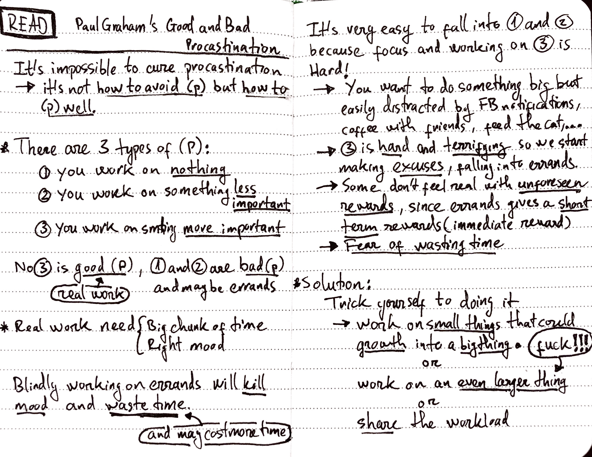

Handwritten Reading Notes
Table of Contents
I find it very helpful to write down what I'm reading in my own words, with a pen, on a paper, instead of typing on a computer. It's forcing myself to process the information better, instead of letting words slipping away, so I can retain more of what I've read.
I'm trying to keep everything simple and did not use any note-taking system, but since it's pretty helpful, I used some techniques from Sketchnotes. I only own a few physical books and always read things on my Kindle, there's no way for me to do marginalia. Instead, I write quotes from books or articles to my notebook and make some comment directly with comic-style bubbles.
I store all the copies of my notes online with OneNote, with the help of Office Lens app, this combo provides a great OCR, I can say, it's the best OCR solution ever (I knew it because it can recognize my ugly handwriting), so I can search the content of my notes anytime. The framed READ symbol at the beginning of each note also serves that purpose.
The following are random notes I wrote during the time I spent on the Internet. I thought it's just me that will read these notes; I let so many typos happen; but then I think it would be nice to share these note online. So, please excuse my ugly handwriting, bad words, and any typos.
1 Good and Bad Procrastination
Article: http://paulgraham.com/procrastination.html
Please excuse any typos :D

TL;DR:
- Procrastination is impossible to cure. How to not procrastination is not a right question to ask, but how to procrastination well.
- There are 3 types of procrastination: It's when you working on
- (1) nothing
- (2) something less important
- (3) something more important
- We also called (3) a good procrastination, that's the real work – things that worth spending time on it. For example, a big research project, finish your side project (eh…)
- (3) are hard things, and sometimes terrifying, or things you don't enjoy doing it, that we always trying to avoid
- One of the way to avoid real works is falling into errands – (1) and (2). It's time wasting. For example, instead of doing homework, you check your Facebook, feeding your cat, go to bath…
- Solution: trick yourself to enjoy doing real works, by:
- Working on smaller tasks that can be add up into a larger goal
- Doing the even harder stuff
- Share the work to other people